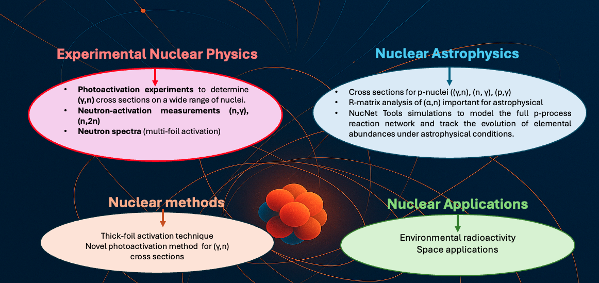

Επαγγελματική Εμπειρία
01/2025 – σήμερα
Ερευνητική Συνεργάτιδα
Διεθνής Οργανισμός Ατομικής Ενέργειας (IAEA)
05/2024 – σήμερα
Ερευνητική Συνεργάτιδα
Συνεργασία n-TOF, CERN
11/2024 – 01/2025
Μεταδιδακτορική Ερευνήτρια
Εργαστήριο XRF, ΙΠΣΦ, ΕΚΕΦΕ «Δημόκριτος»
01/2021 – 02/2022
Ερευνητική Συνεργάτιδα
Διεθνής Οργανισμός Ατομικής Ενέργειας (IAEA)
05/2019 – 11/2024
Μεταδιδακτορική Ερευνήτρια
Ομάδα Πυρηνικής Αστροφυσικής, ΙΠΣΦ, ΕΚΕΦΕ «Δημόκριτος»
05/2018 – 09/2018
Μεταδιδακτορική Ερευνήτρια
Culham Centre for Fusion Energy, Ηνωμένο Βασίλειο
03/2016 – 12/2018
Μεταδιδακτορική Ερευνήτρια
Εργαστήριο Πυρηνικής Φυσικής, ΑΠΘ
06/2016 – 08/2016
Επισκέπτρια Ερευνήτρια
LAPP, Annecy, Γαλλία
09/2014 – 07/2015
Υποψήφια Διδάκτωρ – Ερευνήτρια
ISOLDE, CERN, Ελβετία
